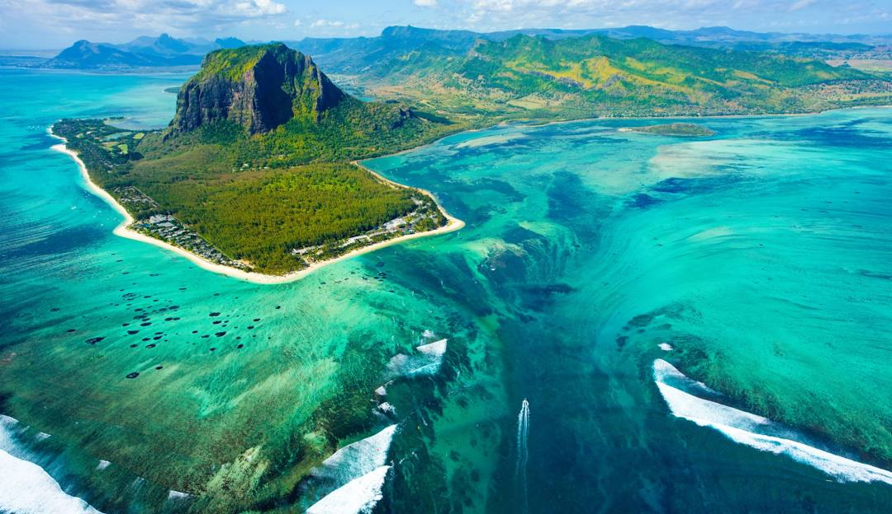
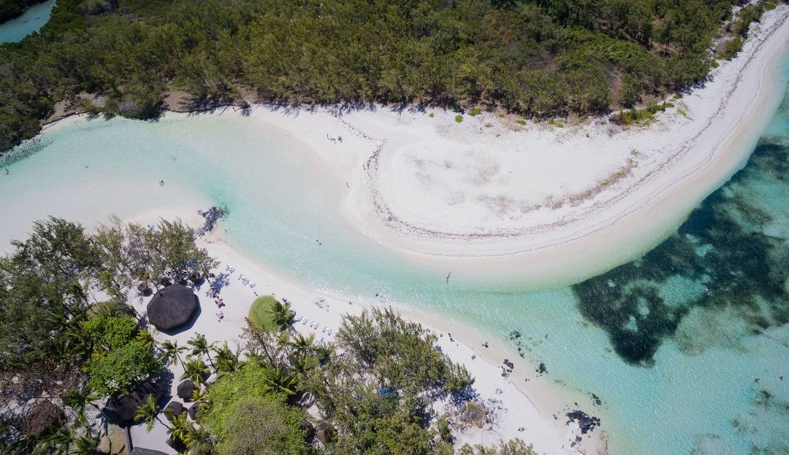

Introduction
Maurice est un pays insulaire de l'océan Indien connu pour ses plages, ses lagons et ses récifs. Ses terres montagneuses comportent quant à elles le parc national des gorges de Rivière Noire, qui abrite des forêts tropicales, des cascades, des sentiers de randonnée et des animaux comme le renard volant. Port-Louis, la capitale, abrite l'hippodrome du Champ de Mars, la maison coloniale
Image
Les meilleurs endroits
1- Ile aux Cerfs

2- Blue Bay